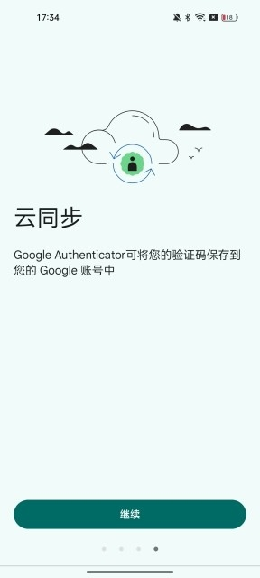

Google Authenticator 深度盘点：离线出码、云同步、换机迁移，这把安全钥匙你用透了吗
从动态码生成原理到云同步边界，从扫码绑定到换机迁移，系统梳理 Google Authenticator 的能力面，告诉你它解决什么、不管什么、哪些场景绕不开。
为什么要认真盘点这玩意儿
Google Authenticator 是 Google 出品的两步验证器应用，专门用来给各种平台的登录流程生成一次性动态验证码。绝大多数安全设置里标着「验证器应用」「Authenticator」「TOTP」的选项，指的就是这一类工具——而 Google 的这个版本，是最早、用户基数最大、被官方文档和第三方教程引用最多的那个，在authenticator官网上能找到更完整的官方渠道说明。
说它是「安全基础设施」一点不夸张：GitHub、GitLab、交易所、云服务商、网银……只要你开了两步验证，几乎都会让你用它。但绝大多数人只停留在「扫码绑定 → 出码复制」的浅层用法上，对它的云同步、换机迁移、批量导入、删除机制这些能力域一知半解，踩坑的不在少数。
这篇就把它的能力面完整铺开。
能力域一：离线出码，从根本上绕开短信的软肋
动态码的生成方式是理解 Authenticator 的第一把钥匙。
短信验证码是平台发给运营商、经基站送到你手机上的——这条链路经过了至少三方（平台、运营商、网络基础设施），每一环都有被截获的可能：SIM 卡劫持、基站窃听、木马读短信，这些真实发生过的攻击手段都指向同一个事实：短信码在抵达你屏幕之前，已经经过了太多不该看到它的手。
Authenticator 的做法完全不同：它在你手机本地，用你扫码时录入的密钥直接算出那串 6 位数动态码。整个过程不需要移动网络、不需要联网、不需要向任何第三方请求。验证码在你屏幕上出现之前，只经过了你手里的那台设备。
| 短信验证码 | 验证器动态码 | |
|---|---|---|
| 生成方式 | 平台发 → 运营商 → 手机 | 手机本地用密钥算出 |
| 是否需要网络 | 需要移动网络 | 完全不需要 |
| 有效期 | 数分钟，由平台定 | 30 秒，过期重算 |
| 被截获风险 | SIM 劫持、基站窃听、木马读短信 | 只存在本机屏幕上 |
这意味着：你在地下室、出国漫游、信号盲区，Authenticator 照样出码；短信码在这些场景下可能根本发不下来，直接把你锁在登录门外。
30 秒过期重算的设计也值得提一句——这是 TOTP（基于时间的一次性密码）标准协议的规定，不是 Google 自定的规矩。全球所有支持验证器的平台，都按这个时间窗口校验。过期就等下一轮，不需要手动刷新，应用自动处理。
能力域二：账号绑定与日常管理
扫码绑定 vs 手动输入
最省事的绑定方式永远是扫码。安装包从官方下载拿到后，平台让你开两步验证时会弹出一个二维码——打开 Authenticator 点右下角的「+」→「扫描二维码」，对准一扫就完事。密钥、账号名、图标什么的全自动录入，不需要你手动填任何东西。
手动输入的入口是「输入设置密钥」，适合二维码扫不出来的边角情况：屏幕反光、旧手机摄像头坏了、平台不给二维码只给一串密钥。手动输入时要注意，时间修正这个选项在大多数场景下保持「Google 提供的时间」就行，别乱调——时间偏差超过 30 秒会导致验证码一直不对。
日常界面能做什么
主屏幕就是一排账号条目，每条显示当前 6 位动态码和 30 秒倒计时条。点一下码会自动复制到剪贴板，去目标平台粘贴即可。长按条目可以重排顺序、编辑名称或图标。

Android 端右滑条目可以删除，iOS 左滑。但删除之前请务必想清楚——这件事的后果比大多数人意识到的要严重得多，后面单独说。
能力域三：云同步，便利与争议并存
这是 Authenticator 近十年最大的功能变化，也是争议最大的一块。
同步到底管什么
云同步管的是验证器里那些动态码：开启后，你绑定的账号列表和对应密钥会挂到登录的 Google 账号上，多台登录同一账号的设备看到同一份列表。换手机时新机装好应用、登录同一 Google 账号，码列表直接回来，不用逐个平台重新绑定。丢手机也不怕，码不跟着设备消失。

但同步不管平台账号本身。各平台的绑定关系、登录状态、密码一概不动。你在新设备上出码登录交易所，交易所看到的仍是「同一个账号在登录」，它不知道也不关心你的验证器换了设备。
必须知道的边界：没有端到端加密
官方帮助中心说明，验证码在 Google 产品的传输与静态存储环节均被加密。但传输加密和存储加密不等于端到端加密——两者的差别和持续数年的争论，是决定你开不开同步前必须知道的一面。
简单说：Google 的服务器理论上能看到你同步的密钥（因为加密密钥由 Google 控制）。而端到端加密意味着只有你的设备能解密，服务器拿到的是加密后的密文。Authenticator 目前不提供后者。具体的同步边界和加密讨论，在authenticator文档里有更细致的拆解。
这不是说 Google 会偷看你的密钥——而是说，如果你对「任何第三方能接触到我的安全凭据副本」这件事零容忍，那云同步就不是一个选项。
切换同步状态的坑
同步和纯本地模式随时可切换，但切换的行为细节各有坑：本地条目上云不会与云端旧列表合并去重，可能出现同名双条目；退出登录会当场移除云端副本。如果你的换机计划依赖云同步作为备份，务必在切换前确认本地条目和云端列表不会产生冲突。
能力域四：换机迁移，从扫码接管到收尾清理
换手机是 Authenticator 用户最容易出乱子的场景之一。两种路线，选对了省半小时，选错了可能要花几天。
路线一：云同步用户——最简单
新机装好应用，登录旧机用的那个 Google 账号，码列表自动回来。没什么额外操作。
路线二：纯本地用户——扫码迁移
如果你没开云同步，或者因为端到端加密争议选择了纯本地模式，迁移流程是这样：
- 旧机打开 Authenticator，进入菜单 →「转移账号」→「导出账号」，生成迁移二维码；
- 新机进入「扫描二维码」状态，对准旧机屏幕上的迁移二维码，扫中后整批账号出现在新机列表；
- 旧机如果提示「多张二维码」，逐张出示、逐张扫完为止——每张都扫到应用提示完成，别漏；
- 挑一个账号真实登录一次验证：出码 ≠ 有效，万一某条绑定在旧机上就有问题（码一直不对但没机会发现），导入继承的是同一个问题。登录验证过，才算真正迁移完成。
扫码一直不识别的话，先排除屏幕亮度与反光；仍不行，回旧机改用逐个账号单独导出——单账号二维码是通用格式，兼容性最好。
短板也要说
盘点不能只吹优点，Google Authenticator 确实有几个绕不开的局限：
没有端到端加密的云同步：如前所述，同步到 Google 账号的密钥理论上 Google 能解密。对安全要求极高的用户来说，这是一个硬伤。
删除是全局动作：云同步开启时，在一台设备上删掉某个条目，所有登录同一 Google 账号的设备上的同一条目一起消失——不存在「只删本机」的选项。删错了只能去对应平台重新绑定，代价是重走一遍安全设置流程。
删除 ≠ 解绑：验证器里删掉条目，平台侧的两步验证关系还在。下次登录那个平台，页面照样索要验证码，而你的验证器已经出不了——这才是「把自己锁在门外」的标准姿势。正确顺序永远是：先在平台安全设置里解绑，再回验证器删条目。
同步不合并去重：新机登录了 Google 账号后再导入本地条目，两者不会自动合并，可能出现同名双条目，需要手动清理。
什么样的人该用它
第一类：安全意识觉醒的普通用户
如果你已经在 GitHub、云服务商、网银这些关键账号上开了两步验证，Authenticator 就是那个帮你真正落地的工具。它的门槛极低——扫码即用，日常操作零学习成本，但带来的安全提升是量级上的。至少，你不会再收到「您的短信验证码正在被转发」这种惊魂提示。
第二类：有换机需求的资深用户
如果你两三年换一次手机，Authenticator 的云同步能帮你省掉最烦的那半小时——重新绑定几十个平台的安全设置。但前提是你接受「Google 能看到你的密钥」这件事。如果不接受，就老老实实用扫码迁移，换机前特意留出时间做这件事。
第三类：对离线可用性有要求的场景
地下室、地下车库、出国漫游、信号盲区——这些地方短信码可能发不下来，但 Authenticator 照样出码。如果你经常处于网络覆盖不稳定的环境（比如做运维跑机房、出差去信号差的地方），这个离线能力就是刚需。
这套资料在三个主流代码托管平台上都能拿到，方便不同环境下查阅：海外用户直接去GitHub，国内访问不畅的可以用Gitee，还有一份镜像托管在GitCode。